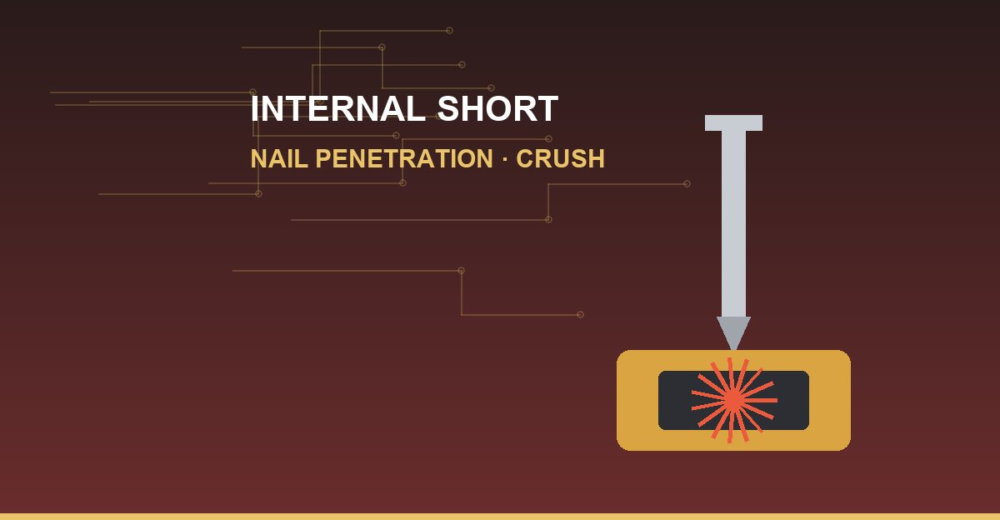

电池针刺与挤压试验指南：机械滥用测试全解析
机械滥用测试回答电池安全里最难的问题：当隔膜失效、电芯内部短路时会发生什么？针刺和挤压试验以受控方式强制复现该场景。本文讲清两项测试为何存在、标准如何定义，以及一个可信的机械滥用测试项目需要什么设备和测量。

模拟最坏的内部故障
所有外部保护——保险丝、BMS限值、温度切断——都挡不住内部短路。隔膜一旦失效，正负极直接接触，电芯在数秒内把储存能量灌进自身。针刺试验用钢针穿透电芯制造这一条件；挤压试验则以板材使电芯变形直至内部结构失效。两项测试都刻意绕开所有外部保护，因此仍是电池项目中最严苛、信息量最大的滥用试验。
监管实践多年间有变化：针刺曾因可复现性争议从部分Pack标准中移除，而挤压始终稳固存在于 GB 38031、IEC 62660-3 相关程序与 SAE J2464 中。头部OEM的内部规范普遍保留了针刺——因为没有其他测试能以同等强度复现内部短路失效模式。
标准如何定义两项测试
挤压：刚性板或压杆以受控力或变形量压向电芯/Pack，载荷通常垂直于最大面；GB 38031 规定保持一定时间的挤压力，判定为不起火、不爆炸。针刺：规定直径（电芯常用 3–8 mm）钢针以受控速度（常见数 mm/s 量级）刺入规定深度，观察温度、电压及起火爆炸事件。SAE J2464 提供了把两项测试与热滥用、电滥用并置的滥用测试总框架。
设备设计：多数项目的短板
机械滥用测试一半是设备工程问题。压力机/针刺装置必须输出受控的速度与力——伺服闭环驱动，而不是手动压力机——且机架刚性必须足够，否则机架柔顺性会吃掉位移预算。夹具必须安全泄放：满充的100 Ah电芯可喷射高温电解液并持续燃烧数分钟，防护腔需要泄爆结构、大流量排风，通常还需惰性气体或细水雾灭火选项。Pack级挤压的夹具须承受数十千牛载荷，同时保留仪器接口。
与安全试验箱集成是最佳实践：在可承受电池泄气事件的腔体内执行滥用测试，既能容纳危害，又能为热测量提供一致气流。
测什么
最小通道集：电芯/模组电压（高速采样 ≥100 Hz——内部短路瞬间电压在毫秒级崩塌）、多点位表面温度（含针刺入区）、力与位移、同步视频。气体分析与排烟管温度增加取证价值。针刺入区的温升速率常达每秒数百摄氏度——采样率不足的热电偶完全抓不到，而这正是区分电芯设计的关键数据。
结果解读
通过/失败是二元的，但数据包含更多信息：升温而不泄气的电芯显示隔膜与热稳定性强；泄气而不起火显示有效的阻火泄气设计；多电芯夹具中的热失控传播时间则直接回答热屏障是否买到了真实的秒数——这些数据直接馈入Pack级防护设计。完整记录每一点；一次做扎实的针刺试验胜过十次粗糙的。
检查清单
- ✓伺服驱动、力与速度经校准；禁用手动压力机。
- ✓夹具几何在报告中以照片文档化。
- ✓电压采样 ≥100 Hz；热电偶固定于针刺入区。
- ✓防护腔按泄气事件额定：泄爆、排风、灭火、远程观察。
- ✓钢针耗材受控——直径、针尖几何与磨损都改变结果。